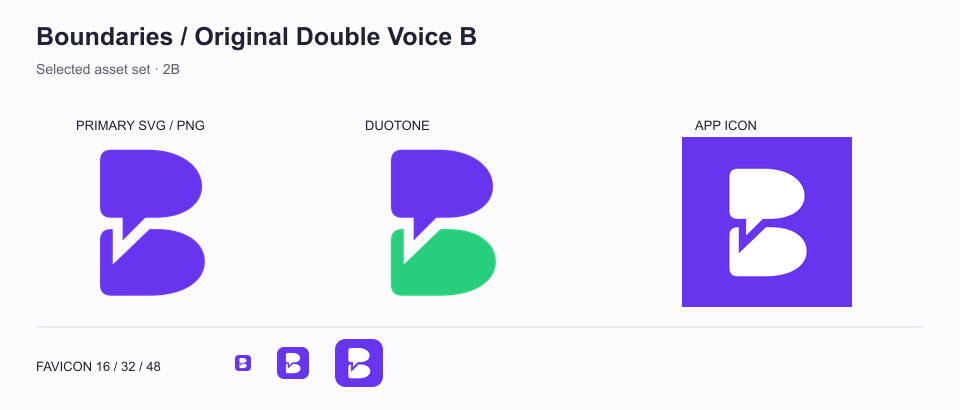

原雙聲 B，暫定採用。
已選用第二輪 2B 原版，保留原本的比例與尾角。所有開發資產放在 frontend/public/assets/brand/，使用說明見 docs/BRAND-ASSETS.md。

提供 SVG、透明 PNG、192／512／1024px App icon、180px Apple touch icon，以及 16／32／48px ICO。正式頁面與既有 favicon 尚未替換。
已選用第二輪 2B 原版，保留原本的比例與尾角。所有開發資產放在 frontend/public/assets/brand/，使用說明見 docs/BRAND-ASSETS.md。

提供 SVG、透明 PNG、192／512／1024px App icon、180px Apple touch icon，以及 16／32／48px ICO。正式頁面與既有 favicon 尚未替換。